김해 음식점 후드청소 | 주방 후드 기름때 집중세척
음식점 주방 후드는 조리 중 발생하는 기름과 수증기가 반복해서 쌓이면서 내부 벽면과 모서리에 끈적한 오염이 누적됩니다. 겉면만 닦아서는 내부 상태를 확인하기 어려워 오염이 쌓인 부분을 세분화해 세척하고 마무리 상태를 다시 확인하는 작업이 필요합니다.
후드 크기, 조리 방식, 기름 사용량, 내부 오염 상태와 작업 가능 시간을 확인한 뒤 무료 방문견적으로 안내합니다.
내외동·어방동·삼계동·장유·율하·주촌·진영 등 음식점과 상가가 많은 지역을 중심으로 후드청소와 매장 대청소를 상담합니다.
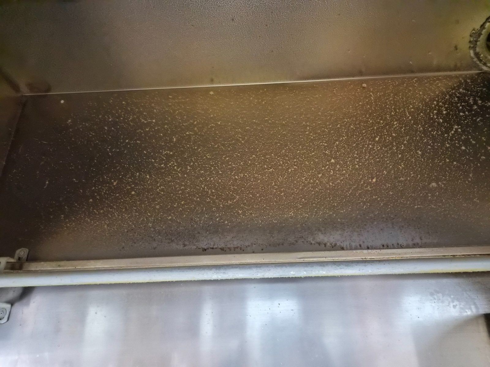
후드 내부 기름때 상태 확인
후드 내부에 기름과 먼지가 함께 붙으면 표면이 끈적해지고 조리 중 발생하는 냄새와 오염이 더 쉽게 달라붙습니다.
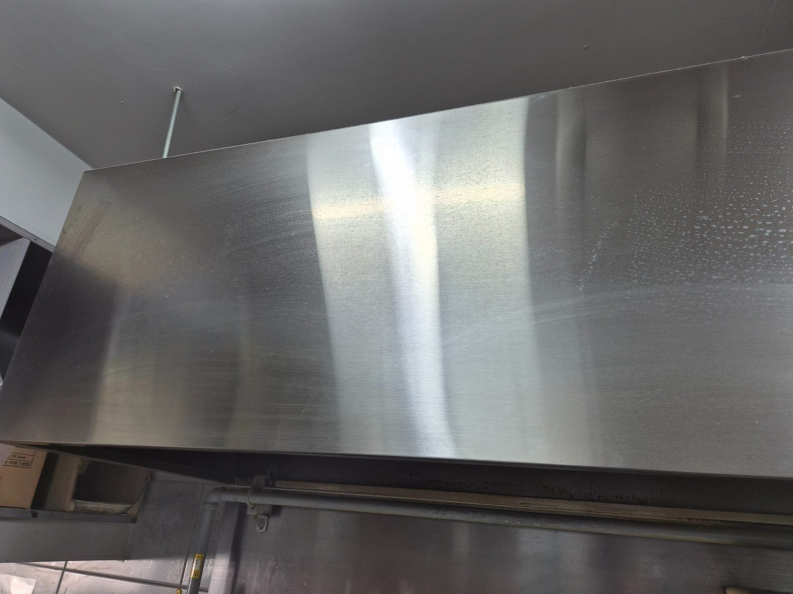
외부 스테인리스 표면 세척
외부 스테인리스는 얼룩과 기름막을 정리하면서 결 방향을 고려해 표면을 관리합니다.
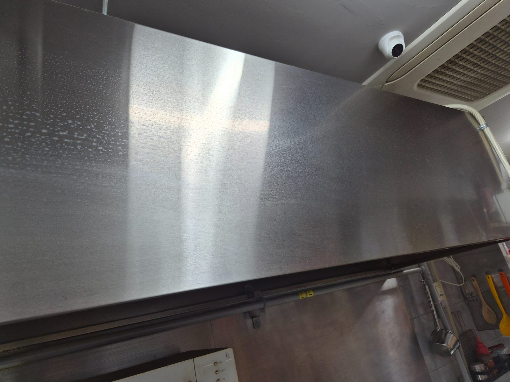
후드 상단 오염 집중 확인
상단과 모서리는 평소 손이 잘 닿지 않아 오염이 두껍게 쌓이기 쉬운 구역입니다.
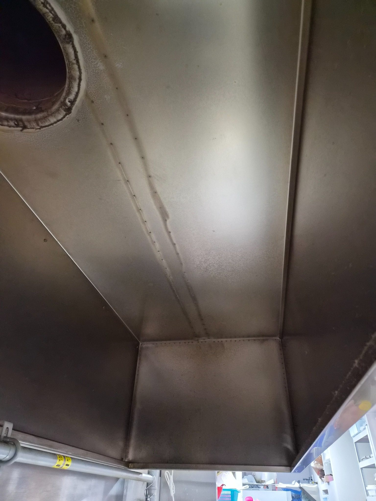
내부 모서리와 이음부 세척
이음부와 모서리에 남은 기름때를 확인하면서 내부 면을 순서대로 정리합니다.
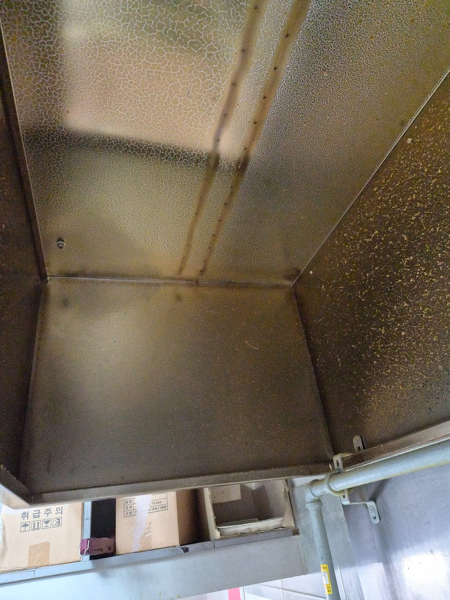
후드 안쪽 벽면 오염 제거
내부 벽면은 넓어 보이지만 배기구 주변과 접합부를 중심으로 오염이 남기 쉬워 세밀한 확인이 필요합니다.
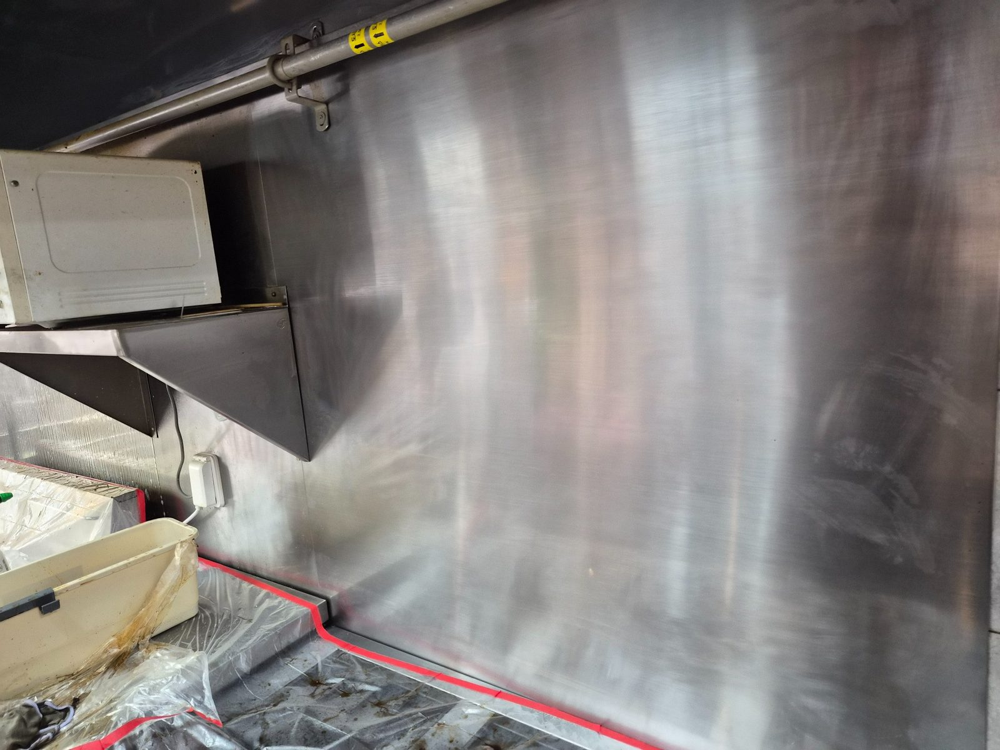
외부와 벽면 주변 정리
후드 주변 벽면과 연결 구간까지 함께 정리하면 주방 전체가 한층 깔끔해 보입니다.
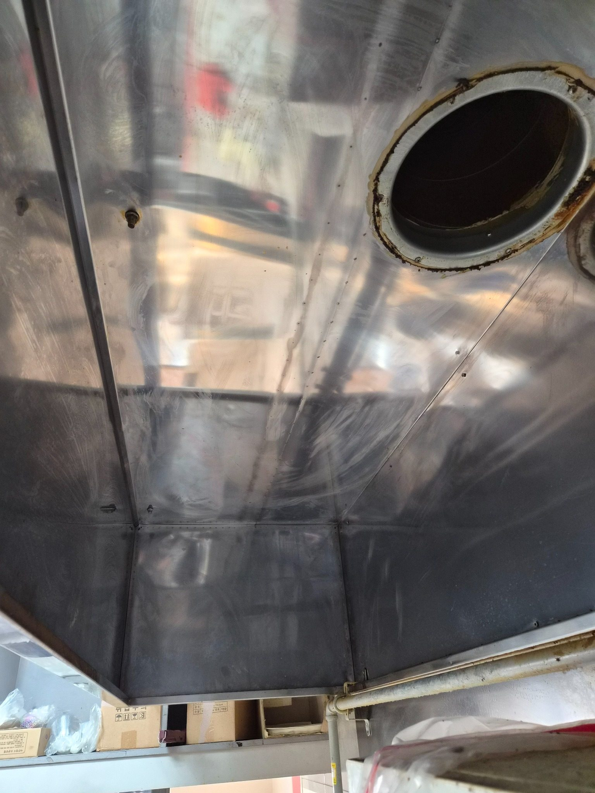
내부 배기구 주변 세척
배기구 주변은 기름이 집중되는 위치라 내부 상태를 확인하고 잔여 오염을 정리합니다.
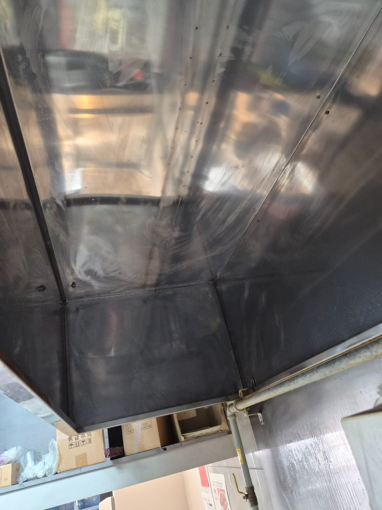
세척 후 내부 표면 확인
세척 후에는 스테인리스 표면에 기름막이 남지 않았는지 빛 반사를 보며 다시 확인합니다.
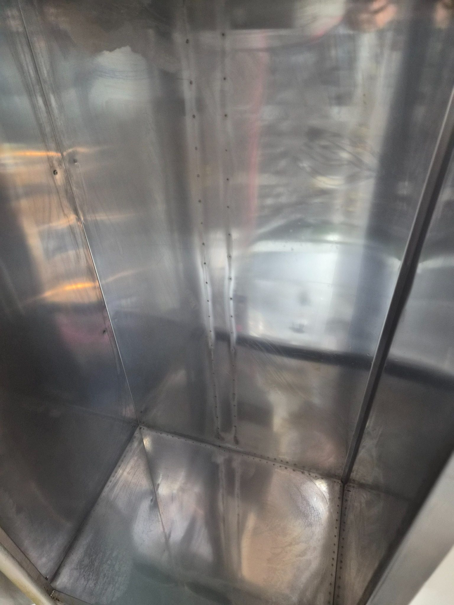
후드 안쪽 전체 마감 점검
후드 안쪽 전체를 재점검해 모서리, 천장면, 벽면에 남은 오염을 정리합니다.
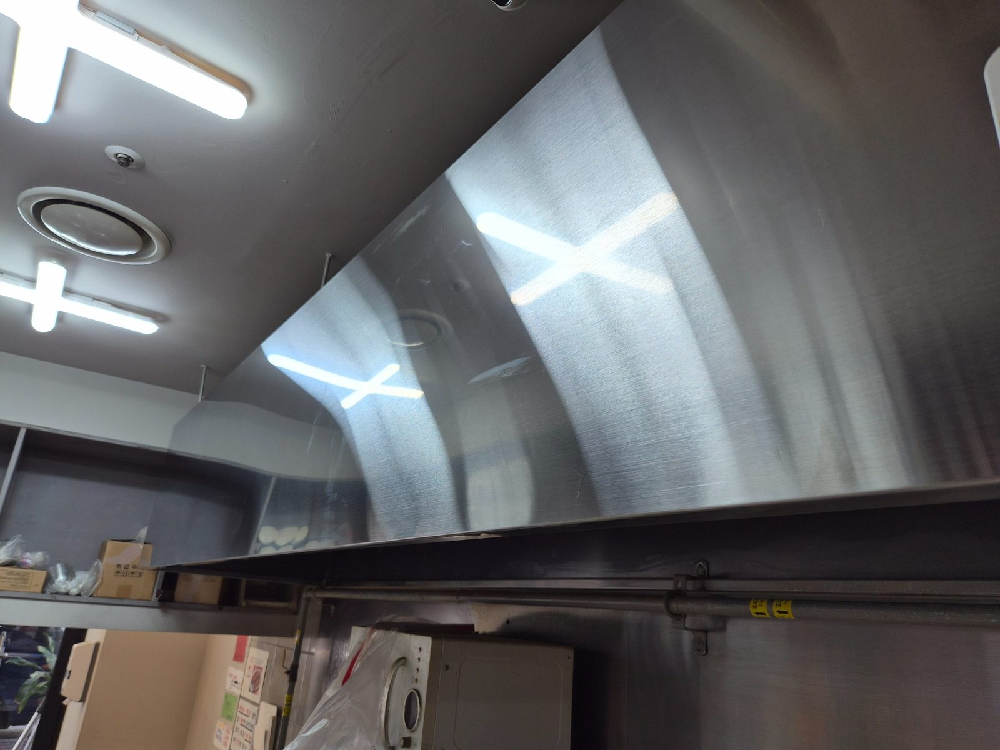
외부 표면 광택 상태 확인
외부 표면은 작업 후 얼룩과 세제 잔여물이 남지 않도록 닦아 마무리합니다.
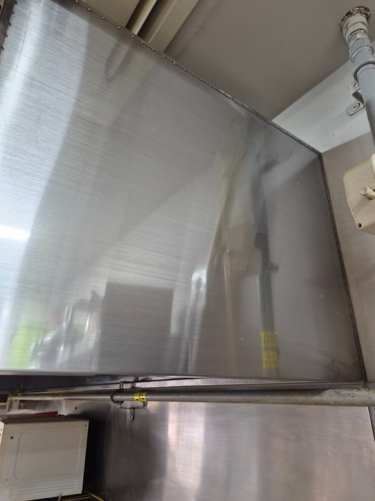
측면과 배관 주변 최종 확인
마지막으로 측면과 배관 주변까지 확인해 후드청소 작업을 마칩니다.
김해 청소 무료 방문견적
현장 규모, 이용 인원, 운영시간, 오염 정도와 관리 범위를 확인한 뒤 무료 방문견적으로 안내합니다. 정기청소는 현장 상황에 따라 주 1회부터 주 6회까지 상담 가능합니다.
무료 방문견적 요청010-7246-5626